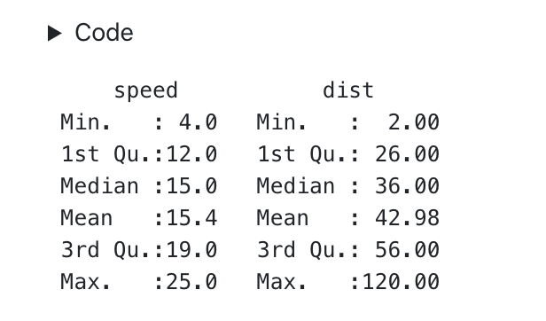

Rendering Rmds
Overview
For R users, Quarto is designed to be highly compatible with existing R Markdown documents:
Quarto uses Rmd as it’s native file format for R, and should generally be able to render any existing Rmd document without changes.
Quarto uses standard knitr options to control chunk execution and output.
Quarto also introduces a number of enhancements for Rmd files that are described below.
One important point of divergence is that Quarto uses it’s own system of output formats rather than traditional R Markdown formats. So instead of this:
---
output:
html_document:
toc: true
---You write this:
---
format:
html:
toc: true
---Where format is any of the over 40 Pandoc output formats. In addition, you will eventually be able to create custom output formats as Quarto Extensions.
Rendering from R
RStudio IDE
In RStudio v1.4 or later, documents that use format rather than output in their YAML metadata will be rendered with Quarto when executing the Knit command from the IDE.
R Console
You can render from the R console using the quarto R package. To install the R package:
install.packages("quarto")Then, to render a document:
library(quarto)
quarto_render("document.Rmd")Intermediates
You can control whether to keep intermediate .md and/or .tex files using the keep-md and keep-tex options:
---
format:
pdf:
toc: true
keep-md: true
keep-tex: true
---Enhancements
Beyond the base set of knitr options, Quarto provides a number of enhancements you can use in your Rmd documents.
Options in YAML
In R Markdown documents the setup chunk is often used to set document-wide knitr and/or R options. This works perfectly well, but does have the disadvantage of being somewhat awkward to share across all documents within a project.
In Quarto documents, you can provide these options in YAML. For example:
---
title: "My Document"
knitr:
opts_chunk:
fig.width: 6
fig.height: 4
r-options:
width: 70
digits: 5
---Note that these options can also be provided on a per-format basis.
Code Folding
For HTML output, Quarto enables you to specify that code is included in the document but hidden by default using the <details> tag. For example:

To specify that all chunks within a document should use code folding, use the code-fold option:
---
title: "My Document"
format:
html:
code-fold: true
---You can also set code folding on a per-chunk basis with the fold attribute:
```{r fold=TRUE}
summary(cars)
```Use the code-summary option to provide a custom caption for the <details> tag:
---
title: "My Document"
format:
html:
code-fold: true
code-summary: "Show the code"
---You can provide summary text per-cell with the summary attribute:
```{r, summary="Show the code"}
summary(cars)
```If you want all foldable code regions to be shown by default, use code-fold: show. For example:
---
title: "My Document"
format:
html:
code-fold: show
---This can also be specified on a per-cell basis:
```{r, fold="show"}
summary(cars)
```Cache Control
You can use standard knitr cache attributes to cache time consuming code chunks. In addition, you can use quarto command line options (or their equivalent arguments to the quarto_render function) to control caching behavior without changing the document’s code.
Use these command line options to force the use of caching on all chunks, disable the use of caching on all chunks, or to force a refresh of the cache even if it has not been invalidated:
$ quarto render document.Rmd --cache
$ quarto render document.Rmd --no-cache
$ quarto render document.Rmd --cache-refresh Or from R using the quarto package:
library(quarto)
quarto_render("document.Rmd", cache = TRUE)
quarto_render("document.Rmd", cache = FALSE)
quarto_render("document.Rmd", cache_refresh = TRUE)You can also specify these options within a document’s YAML metadata. The main advantage of this over the knitr setup chunk is that could specify caching for an entire project in one place. For example:
---
project:
name: myproject
cache: trueFigures and Layout
Quarto includes a number of enhancements to figure handling, including a comprehensive system for laying out multi-row/column figure panels. See the articles on Figures and Layout for additional details.
Cross References
Quarto has a built-in system for cross-references to figures, tables, equations, sections, theorems, etc. See the article on Cross References for additional details.